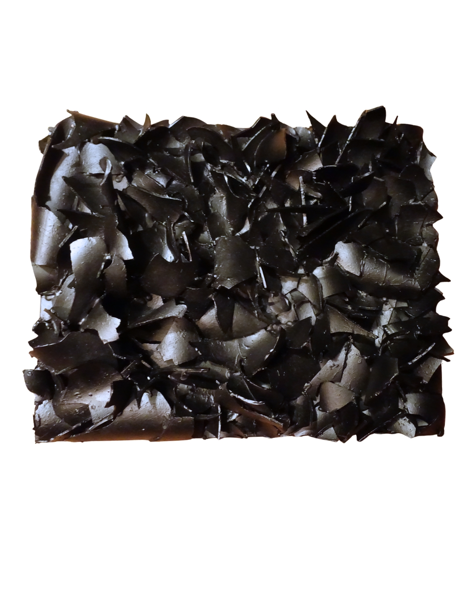

01 · Sculpture · StillA broken glass sculpture, photographed.
Photogrammetric capture — the object reborn as mesh.
Mesh dragged, folded, fractured further in software.
The distorted scan returned to light — two studies.
The data double cast back onto the artifact it came from.
An object. Its scan. The scan, distorted. The distortion, cast back as light. The light, scattered by surface.
The artifact meets the version it has become.
Form·Scan·Distort·Project·Return
Featured at One Love — Miami Art Week, December 2026.